Photo Gallery
Discover Gaborone through stunning visuals capturing its vibrant café scene, exciting nightlife, and serene landscapes.
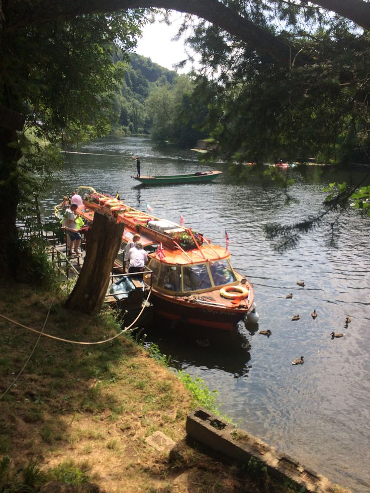
 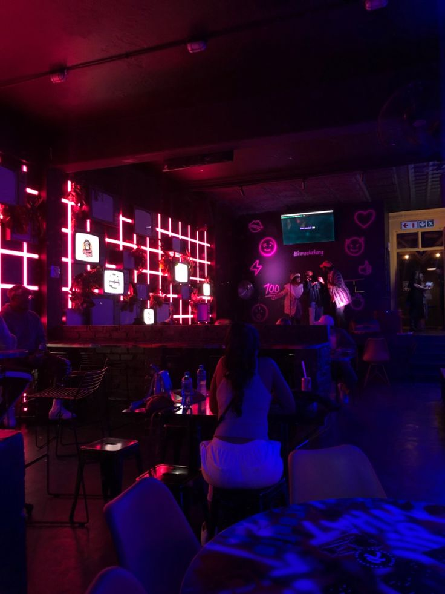
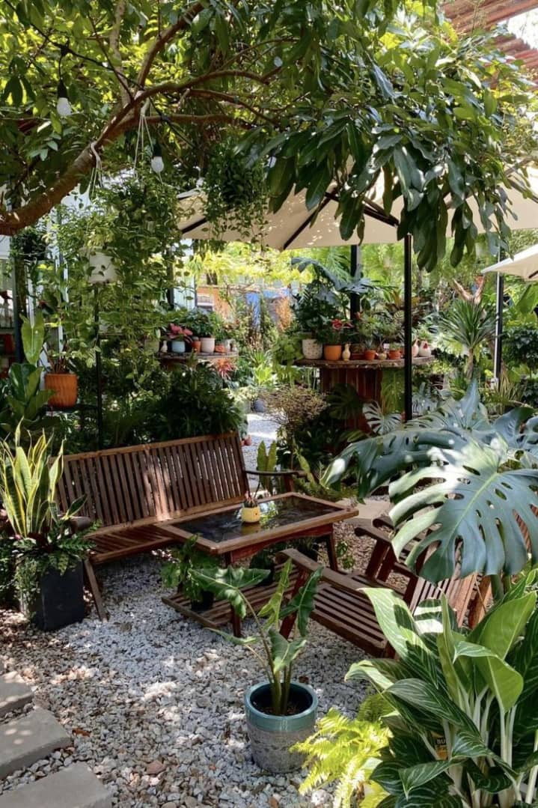
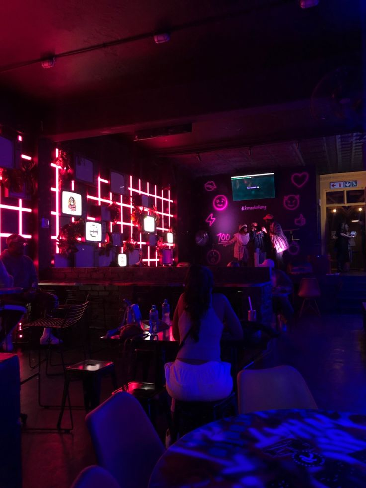
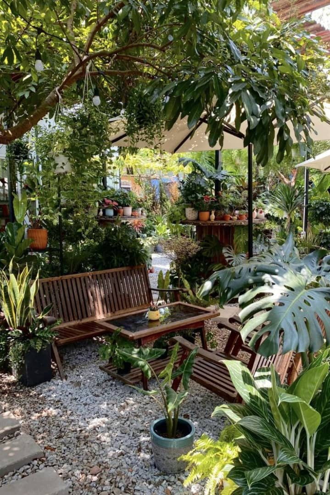
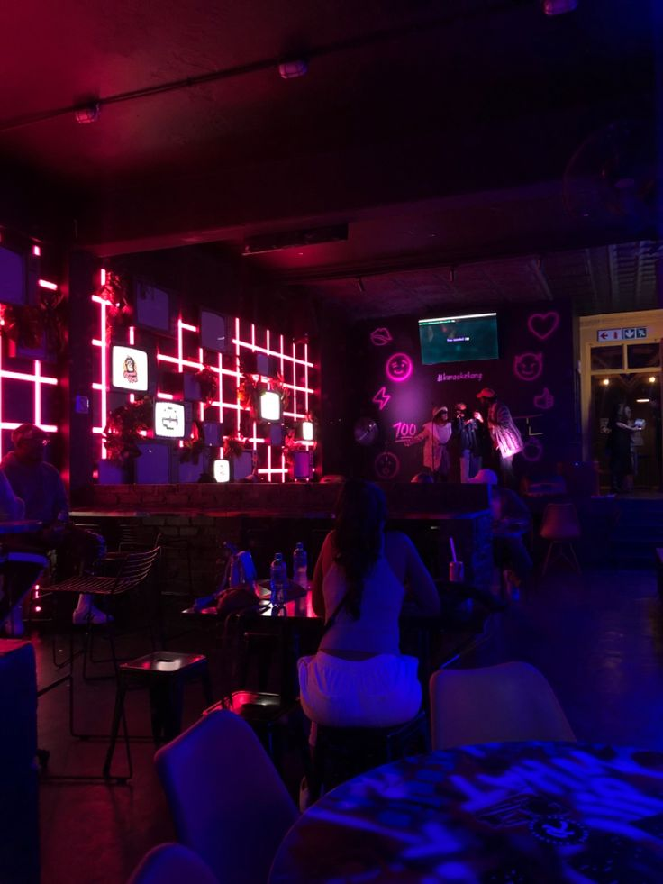
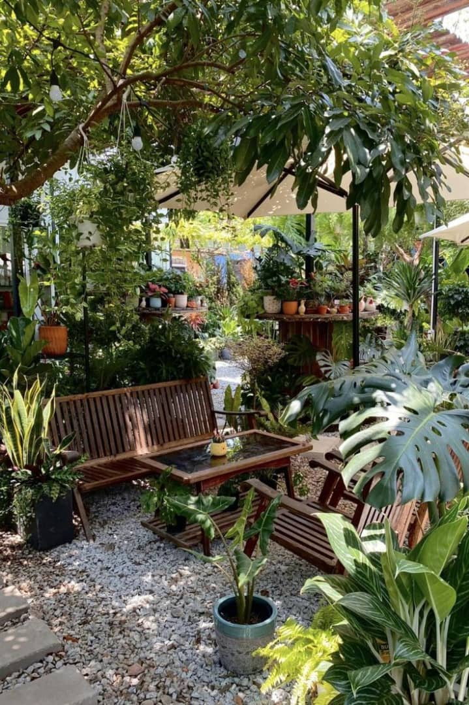
Explore the best spots through student experiences, video tours, and stunning photo galleries.
Welcome to our storytelling corner—where students share adventures, experiences, and insights from their journeys.
Last weekend, I set out to explore Kgale Hill, one of the most scenic spots in Gaborone. The view from the top was breathtaking, and the journey up reminded me why nature is so revitalizing.
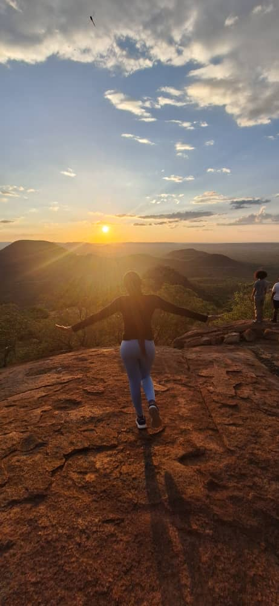From quiet cafes to lively street markets, Gaborone has a wealth of hidden gems waiting to be explored. Here are some of my favorite spots that every student should check out.
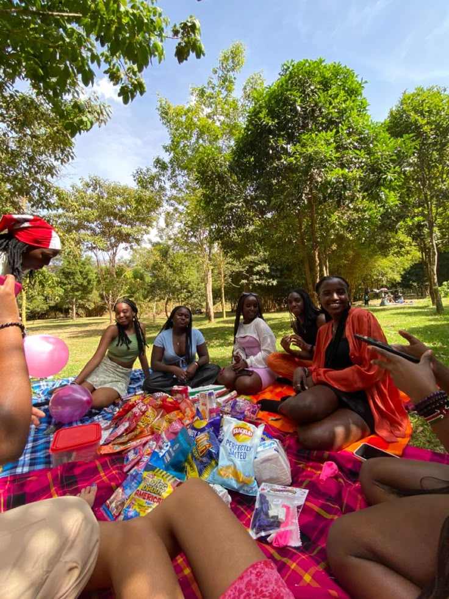Take a visual journey through Gaborone’s must-visit spots—from scenic nature reserves to hidden urban retreats.
Discover Gaborone through stunning visuals capturing its vibrant café scene, exciting nightlife, and serene landscapes.
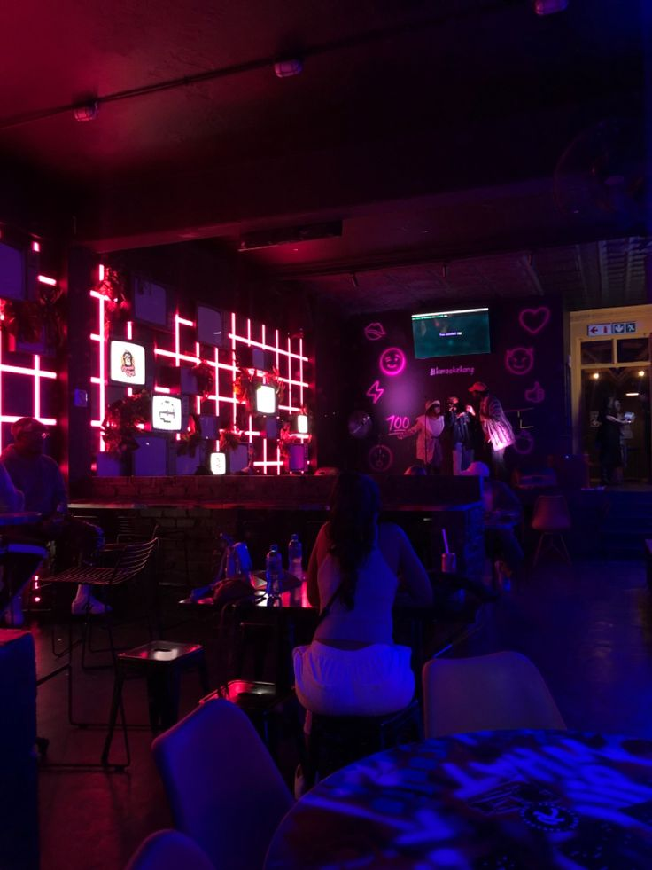
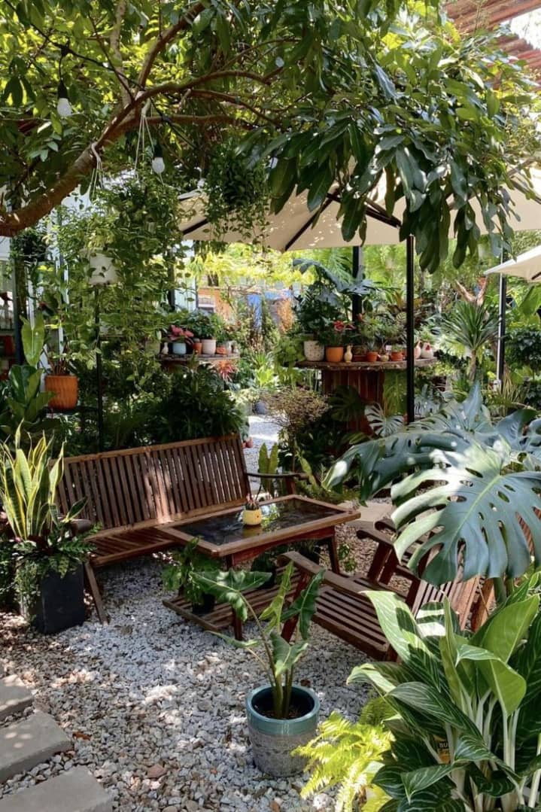